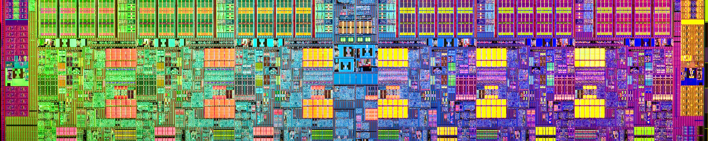

Compléments
L'ALU plus en détails
L'unité arithmétique et logique est souvent représentée par ce schéma en V :


Les drapeaux (flags) sont des résultats secondaires de l'ALU.
Les drapeaux de la GameBoy
Par exemple, la GameBoy possède 4 drapeaux de 1 bit chacun, qui correspondent aux 4 derniers bits de son registre F :
-
Z(Zero Flag) vaut 1 si le résultat est nul, 0 sinon. -
CY(Carry Flag) vaut 1 s'il y a eu un dépassement, 0 sinon. -
N(Subtract Flag) vaut 1 si l'opération était une soustraction, 0 sinon. -
HC(Half-Carry Flag) vaut 1 s'il y a eu un dépassement sur les 4 premiers bits, 0 sinon.
Par exemple, on exécute l'instruction ADD A, B (ajouter le registre B au registre A) avec le registre A = 10010001 (\(145_{10}\)) et B = 10010001 (\(131_{10}\)). La fonction demandée à l'ALU est la fonction d'addition ADD. Mathématiquement, \(145 + 131 = 276 = (100010100)_2\), le résultat s'écrit donc sur 9 bits. Ainsi le résultat, de taille fixe limitée à 8 bits (la taille du registre de destination A), sera la valeur tronquée 00010100. Comme il y a eu un dépassement, le drapeau de retenue CYsera levé, c'est-à-dire mis à 1.
Quelles seraient les valeurs des autres drapeaux après une telle opération ?
L'ALU est un circuit composé de transistors assemblés en portes logiques. Puisque vous avez déjà réalisé un additionneur binaire 8 bits avec des portes logiques, vous avez en quelque sorte déjà conçu un mini-ALU !
Cycles d'horloge
Le processeur est cadencé au rythme d'une horloge interne de fréquence constante (en Hertz). Un cycle d'horloge correspond à la durée d'un cycle, soit l'inverse de la fréquence. Par exemple, le CPU de mon ordinateur est cadencé à 3.3 Ghz, il effectue donc 3.3 milliards de cycles par seconde. Une instruction peut prendre un ou plusieurs cycles pour être complètement réalisée.


Les différents types de mémoire


Volatilité
On distingue deux types de mémoire :
-
La mémoire volatile si la mémoire perd son contenu lorsqu'elle n'est plus alimentée.
-
La mémoire permanente si la mémoire converse son contenu lorsqu'elle n'est plus alimentée.
Mémoire de Stockage
Si la mémoire RAM vue jusqu'à présent est volatile, les mémoires permanentes comme les disques durs (HDD) ou les SDD sont nécessaires pour stocker des données une fois la machine éteinte. On les appelle mémoire de stockage (ou mémoire de masse) pour cette raison. Ces mémoires visent à obtenir une capacité de stockage élevée à faible coût, avec la contrepartie d'être moins rapides.
La mémoire morte (ROM)
Une mémoire de stockage peut être de type ROM (Read Only Memory, ou mémoire morte), qui ne peut être que lue (pas d'écriture possible) : les cartouches de jeu de la GameBoy en sont un bon exemple. Les ROM servent surtout à stocker des programmes.
Caches du processeur
Au sein du processeur, il existe des mémoires intermédiaires entre les registres et la mémoire RAM, les caches. Ils permettent de ne pas limiter les performances en obligeant le processeur à attendre (on parle de goulot d'étranglement) la récupération des données dans la RAM. Typiquement, lorsque vous accéder à une valeur dans la RAM, une tranche de celle-ci est copiée dans ces caches sous l'hypothèse probable que les valeurs que vous allez lire par la suite se situent dedans.


Ordres de grandeur
Les ordres de grandeur typiques pour chaque type de mémoire pour un ordinateur actuel (ma machine) :
| Mémoire | Volatilité | Capacité | Débit | Latence | Coût |
|---|---|---|---|---|---|
| Registres | Volatile | 32 ko | 500 Go/s | 1 ns | |
| Caches | Volatile | 512 ko ~ 16 Mo | 300 Go/s | 10 ns | |
| RAM | Volatile | 16 Go | 50 Go/s | 60 ns | |
| Stockage | Permanent | 1 To | 500 Mo/s | 100 µs |
Les données se déplacent à travers ces différentes mémoires via des bus dans ce même ordre : Stockage RAM Caches Registres
Latence
La latence d'une mémoire est le temps nécessaire pour qu'une donnée soit récupérée depuis cette mémoire.
Architecture monoprocesseur et multiprocesseur
La loi de Moore
La loi de Moore est une observation empirique formulée par Gordon Moore en 1965, qui énonçait que le nombre de transistors dans les microprocesseurs doubles environ tous les deux ans. Cela signifie que la puissance de traitement des ordinateurs augmente également de manière exponentielle au fil du temps.
-
En 1971, le premier processeur produit par Gordon Moore, l'Intel 4004, était cadencé à 750 kHz et contenait 2300 transistors de 10 µm (gravure).
-
En 2023, l'Intel Core i9-12900K cadencé à 5.2 GHz contient 3 milliards de transistors de 7 nm.


Hélas, l'augmentation de la fréquence devenant techniquement de plus en plus difficile (problème de surchauffe) et la miniaturisation des transistors se heurtant à la physique quantique, une nouvelle idée permet de poursuivre la loi de Moore, celle d'ajouter plusieurs processeurs au sein d'une même machine.
Architecture multiprocesseur et processeur multicœurs
Une architecture monoprocesseur est une architecture ne comprenant qu'un seul processeur. D'un autre côté, une architecture multiprocesseur est une architecture dans laquelle plusieurs processeurs distincts fonctionnent simultanément pour exécuter des instructions.
Les processeurs d'aujourd'hui ont plusieurs unités de traitement appelées cœurs, chacune avec ses propres registres, unité arithmétique et logique, unité de commande et une mémoire cache (L1). Bien que ces cœurs partagent aussi certaines mémoires caches (L2, L3), ils peuvent exécuter des instructions indépendamment les uns des autres, permettant de traiter plusieurs instructions simultanément. Un processeur multicœur est donc une forme d'architecture multiprocesseur qui utilise plusieurs unités de traitement sur une seule puce, tandis que les architectures multiprocesseur traditionnelles utilisent plusieurs processeurs physiques distincts.

L'ajout de processeurs ou de cœurs ne garantit pas automatiquement de meilleures performances. Les programmes qui ne sont pas conçues pour ces architectures ne bénéficieront que peu, voire pas du tout, d'une augmentation du nombre de cœurs. En effet, les cœurs doivent partager l'accès à la mémoire vive et à la mémoire cache, ce qui peut entraîner des ralentissements. La programmation parallèle et la programmation concurrente sont deux approches de programmation qui permettent de tirer parti de toutes les ressources de calculs de telles architectures.
Et Python dans tout ça ?
Langages de bas et haut niveau
Le langage machine et l'assembleur sont des langages de bas niveau qui sont proches du langage machine et qui nécessitent une compréhension plus approfondie de l'architecture matérielle de l'ordinateur. Ces langages primitifs sont souvent plus difficiles à lire et à comprendre pour les programmeurs.
Les langages de haut niveau (Python, C, Java etc.), en revanche, sont des langages de programmation qui sont conçus pour être plus proches du langage naturel humain, ce qui les rend plus faciles à lire et à comprendre pour les programmeurs. Ces langages sont également conçus pour être plus abstraits, c'est-à-dire qu'ils se concentrent sur les concepts et les structures de haut niveau, plutôt que sur les détails de bas niveau.
Si certains langages de programmation peuvent facilement se positionner sur un spectre allant de bas niveau à haut niveau, d'autres, tels que le C++, fusionnent ces deux approches.
Langages compilés et interprétés
Une fois qu'un script Python est exécuté, il est traduit au fur et à mesure de son exécution en code machine, c'est un langage dit interprété.
En revanche, certains langages sont dit compilés (comme le C), ce qui signifie que le code source est entièrement traduit en code machine avant son exécution.